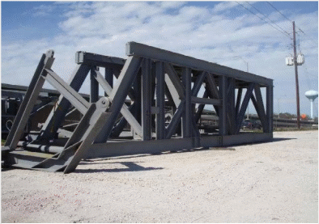
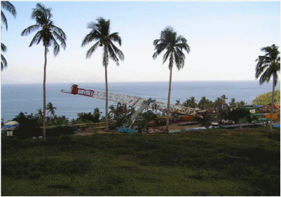
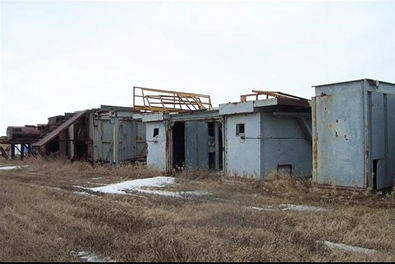
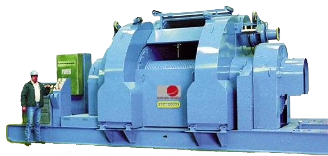
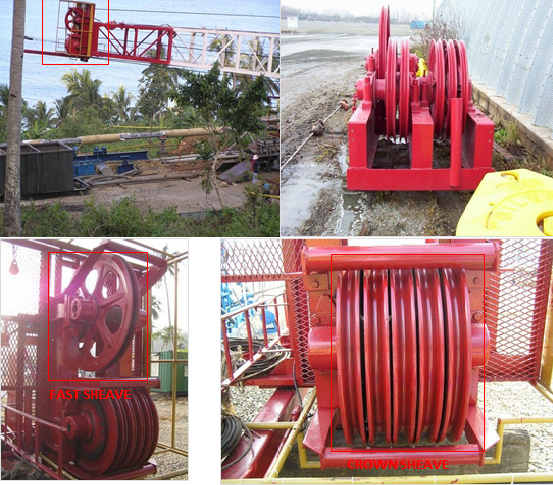
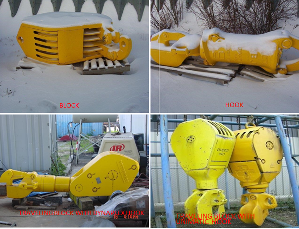
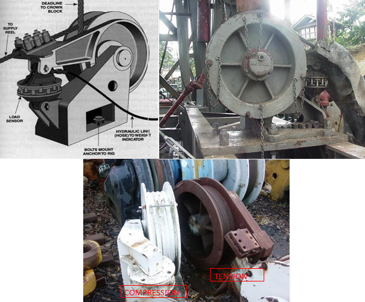
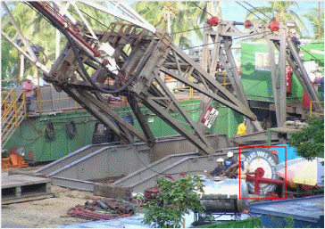
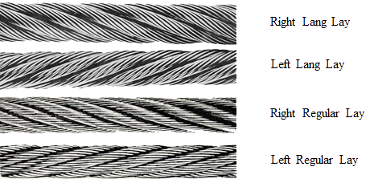
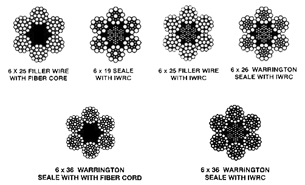

The Rig Equipment responsible for the raising and lowering of the drill string. Consist of the following :
Derrick
A large load bearing structure, usually of bolted construction. The standard derrick has four legs standing at the corners of the substructure.

Mast
A portable derrick that can be raised as unit. For transporting by land, the mast can be divided into two or more section.

Substructure
The foundation in which the derrick or mast and usually the Drawworks sit. In contains space for storage and well control equipment.

Drawworks
The hoisting mechanism on a drilling rig. It is essentially a winch that spools off or takes in the drilling line and thus raises or lowers the drill string.

Crown Block
An assembly of sheaves mounted on beams at the top of the derrick / mast and over which the drilling line is reeved.

Traveling Block
An assembly of sheaves or pulleys through which the drilling line is reeved and which moves up and down in the Derrick or Mast.

Deadline Anchor
An equipment that holds down the deadline part of the wire rope. It is usually bolted on to the substructure.

Supply Reel
A spool that stores the unused portion of the Drilling Line.

Drilling Line
The wire rope used to support the Drilling Tools.
Types of Wire Rope Lay

Type of Wire Rope Construction

Typically the wire rope used for Drilling Line would have the following characteristics :
Shallow : 1” to 1-1/8” diameter
Deep : 1-1/4” to 2” diameter
Contruction : 6 x 19 S or 6 x 21 S or 6 x 25 FW, RRL, IPS or EIP, IWRC